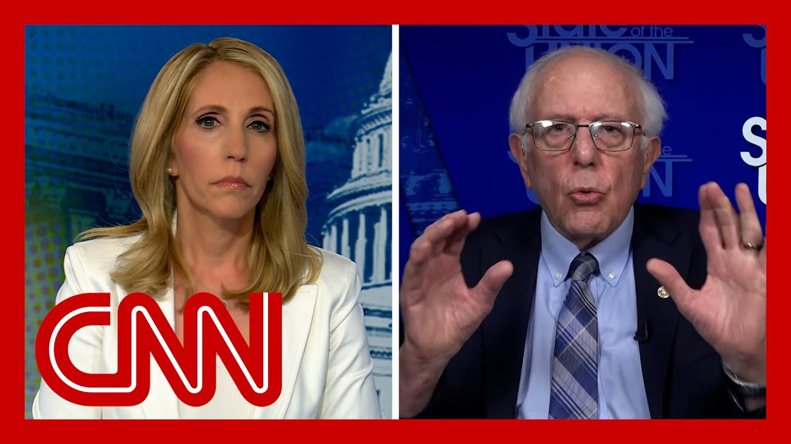

【伯尼·桑德斯：特朗普总统“想要所有权力”】
Summary: Senator Bernie Sanders criticizes President Trump's authoritarian tendencies, including targeting media, law firms, universities, and judges, while urging Republicans to defend democracy. He also condemns GOP healthcare cuts favoring the wealthy and calls for campaign finance reform to prevent billionaire influence.
摘要： 参议员伯尼·桑德斯批评特朗普总统的威权倾向，包括针对媒体、律所、大学和法官的行为，同时呼吁共和党人捍卫民主。他还谴责共和党削减医疗福利以惠及富人的政策，并呼吁改革竞选资金制度以遏制亿万富翁的影响。

⏱️ Estimated Reading Time: 11 min
📚 六级生词 📚 雅思生词 📚 托福生词 📚 GRE生词 📚 视频里的生词
I want to bring in independent Senator Bernie Sanders of Vermont.
我想请出佛蒙特州的无党派参议员伯尼·桑德斯。
Sir, thank you so much for being here.
先生，非常感谢您来到这里。
I'm going to start where I left off with the congresswoman.
我将从刚才与女议员的话题继续。
What is your response to the fact that the president has ordered 2000 National Guard troops to California?
您对总统下令2000名国民警卫队士兵前往加州有何回应？
Look, Dana, we have a president that was moving this country rapidly into authoritarianism.
听着，达娜，我们有一位正将国家迅速推向威权主义的总统。
He is suing media who criticized him.
他正在起诉批评他的媒体。
He is going after law firms who have clients who were against them.
他针对那些代理反对他的客户的律所。
He is going after universities that teach courses that he doesn't like.
他打压开设他不喜欢的课程的大学。
He's threatening to impeach judges who rule against them, and he is usurping the powers of the United States Congress.
他威胁弹劾作出不利裁决的法官，并篡夺美国国会的权力。
This guy wants all of the power.
这家伙想要所有权力。
He does not believe in the Constitution.
他不相信宪法。
in the rule of law.
不相信法治。
My understanding is that the governor of California, the mayor of the city of Los Angeles, did not request the National Guard, but he thinks he has the right to do anything he wants.
据我所知，加州州长和洛杉矶市长并未请求国民警卫队，但他认为自己有权为所欲为。
And I would say that to a large degree, the future of this country rests with a small number of Republicans in the House and Senate who know better, who do know what the Constitution is about.
我认为，这个国家的未来很大程度上取决于众议院和参议院中少数明事理、真正理解宪法的共和党人。
And it's high time they stood up for our Constitution and the rule of law.
现在正是他们捍卫宪法和法治的时候。
You know, we just celebrated a few days ago, June 6th, the American American landing, at Normandy, which began the invasion of Europe to defeat fascism and Nazi ism.
几天前的6月6日，我们刚纪念了美军诺曼底登陆，那场开启欧洲反法西斯战争的战役。
Those guys died.
那些人牺牲了。
They gave up their lives to defend democracy, not to have an all powerful ruler in the United States of America.
他们献出生命是为了捍卫民主，而不是让美国出现一个全能的统治者。
Senator, you mentioned on a very different topic whether Republicans would stand up to the president.
参议员，您提到另一个话题——共和党人是否会对抗总统。
There definitely is, some clashing politically, internally among Republicans on the president's legislative agenda, specifically the giant spending and tax bill.
共和党内部在总统的立法议程上确实存在政治冲突，尤其是巨额支出和税收法案。
before the United States Senate in order to try to fix some of those internal GOP differences.
参议院正试图解决共和党内部的这些分歧。
Senate Republicans are eyeing changes to Medicare.
参议院共和党人正考虑修改医疗保险。
We know there are also $700 billion worth of cuts in the existing bill to Medicaid.
我们知道现有法案还包含对医疗补助的7000亿美元削减。
Is there anything that you and Democrats can do to stop it, since you just don't have the votes?
既然你们没有足够票数，您和民主党人能否采取行动阻止？
Well, let's be clear, Dana.
达娜，我们必须明确一点。
What these guys want to do is, according to the CBO, throw 15 million Americans off the health care they now have on top of the 85 million Americans who are currently uninsured or underinsured.
根据国会预算办公室数据，这些人想让1500万美国人失去现有医保，而目前已有8500万人没有或医保不足。
And on top of the fact that we are the only major country on earth not to guarantee health care to all people.
更何况美国是地球上唯一不保障全民医保的主要国家。
As you may have seen, there was a report, a study done by Yale University in the University of Pennsylvania.
您可能看过耶鲁大学和宾夕法尼亚大学的研究报告。
They said 50,000 people a year are going to die, are going to die because of their lack of health care.
报告指出每年将有5万人因缺乏医保而死亡。
This impacts not only individuals.
这不仅影响个人。
It impacts nursing homes, hospitals.
还影响养老院和医院。
It will impact community health centers.
也将波及社区医疗中心。
And you know why they are doing this?
知道他们为何这样做吗？
They are doing this so they can give $600 billion in tax breaks to the top 1%, $400 billion in tax breaks to large, profitable corporations.
他们想借此向顶层1%提供6000亿美元减税，向盈利大企业提供4000亿美元减税。
This bill is an outrage.
这个法案令人愤慨。
And the American people have got to stand up and fight back.
美国人民必须奋起反抗。
You're asking what we are doing.
您问我们在做什么。
We are mobilizing people throughout this country, especially in marginal districts that have Republican members of Congress, and demand that people ask their members of Congress, do you support tax breaks for billionaires and throwing kids and elderly people off of the health care that they have?
我们正动员全国民众，尤其是共和党议员所在的摇摆选区，要求人们质问他们的议员：你是否支持给亿万富翁减税并剥夺儿童和老人的医保？
So you are talking mostly about Medicaid, which is already in, in this bill, those cuts that you were describing.
所以您主要讨论的是医疗补助，法案中已包含您描述的削减。
one of the issues is Medicare and whether or not there will be changes in order for the Republicans to get, votes among them, amongst themselves.
另一个问题是医疗保险，共和党为争取内部选票可能对其进行修改。
Medicare is one of the biggest drivers of federal spending.
医疗保险是联邦支出的最大推动因素之一。
Are you concerned about America's runaway national debt?
您是否担心美国失控的国债？
And would changes to entitlements like Medicare be necessary to try to rein it in?
是否需要修改医保等福利制度来控制债务？
Dana.
达娜。
Dana, let's talk about health care for a moment.
让我们先谈谈医疗问题。
As I hope most people know, not only are we We are spending over twice as much per capita on health care as the people of any other country.
希望多数人知道，我们的人均医疗支出是其他国家的两倍多。
The function of the American health care system is to make huge profits for the insurance companies and the drug companies.
美国医疗系统的功能是为保险公司和制药公司牟取暴利。
And if the Republicans are serious about cutting health care costs, you don't throw people off of Medicaid or Medicare.
如果共和党真想降低医疗成本，就不该让人们失去医疗补助或医疗保险。
You have the guts to take on the insurance companies who are ripping off the American people every single day.
你们应该有胆量对抗那些每天剥削美国人民的保险公司。
We're spending $14,500 per person on health care.
我们的人均医疗支出高达14,500美元。
Outrageous, unsustainable by far the highest prices in the world.
荒谬且不可持续，这是全球最高价格。
But the Republicans would rather throw people off of Medicare, children off of Medicaid, rather than take on the insurance companies.
但共和党宁愿让人们失去医保、让孩子失去医疗补助，也不愿对抗保险公司。
Well, the power of the drug companies.
还有制药公司的势力。
I want to ask you about, a situation, a drama that really sort of engulfed everyone and everything here in Washington, which is the the breakup between Donald Trump and Elon Musk this week.
我想问您关于本周特朗普与埃隆·马斯克决裂的事件，这场风波席卷了整个华盛顿。
Some Democrats are trying to recruit Musk to their side.
一些民主党人试图拉拢马斯克。
To your side said before reported that Congressman Ro Khanna spoke with one of Elon Musks senior confidants about whether Musk might want to help Democrats in the midterms.
此前有报道称，罗·卡纳议员与马斯克的高级密谈是否愿在中期选举中帮助民主党。
Do you see Elon Musk as someone who Democrats should work with?
您认为马斯克是民主党应合作的对象吗？
No.
不。
I think Musk has evolved over the years.
我认为马斯克这些年已转变立场。
is he actually voted for Obama, I think in 2008.
他曾在2008年投票给奥巴马。
but over the years, he has developed into a right wing extremist.
但多年来，他已变成右翼极端分子。
The issue, and I think the drama, the story of what happened last week, is you are living increasingly in an oligarchic society.
问题的核心，也是上周戏剧性事件的关键，是我们正日益生活在寡头社会。
And Musk said to Trump, hey, listen, I spent $270 million to get you elected.
马斯克对特朗普说："听着，我花了2.7亿美元让你当选。"
I bought you the presidency because we have a corrupt campaign finance system and billionaires could do that.
"我买下了你的总统职位，因为我们有腐败的竞选资金制度，亿万富翁可以这么做。"
And Trump said, well, I gave you the right to run the government for 3 or 4 months, but I don't like the guy.
特朗普则说："我给了你管理政府三四个月的权力，但我不喜欢这家伙。"
You want to run NASA.
"你想掌管NASA。"
And we got to get rid of him.
"我们必须除掉他。"
And Musk got upset.
马斯克因此愤怒。
This is a fight between oligarchs.
这是寡头之间的斗争。
It's a fight about power among the few.
是少数人之间的权力争夺。
really an embarrassment to those of us who believe in democracy
对我们这些相信民主的人真是种耻辱
Well, I was going to ask you if Musk is right when he said the only reason Donald Trump won in November is because he donated $270 million to his campaign.
我本想问您，马斯克说特朗普11月获胜的唯一原因是他捐赠了2.7亿美元，这话是否正确。
But I know the answer.
但我知道答案。
Your answer is yes.
您的回答是肯定的。
You well, you got a corrupt campaign finance system.
您会说："我们有腐败的竞选资金制度。"
But by the way, it's not just Republicans.
但不仅是共和党。
Democratic billionaires do that as well.
民主党亿万富翁也这么做。
That's why we need to get rid of this disastrous Citizens United Supreme Court decision, moved the public funding of elections so that billionaires do not buy our democracy.
因此我们需要废除灾难性的"联合公民案"最高法院裁决，推动选举公共资助，防止亿万富翁收买民主。
Senator Bernie Sanders, always good to see you.
伯尼·桑德斯参议员，很高兴见到您。
Thank you so much for coming on this morning, sir.
非常感谢您今早的参与。
Thank you very much.
非常感谢。